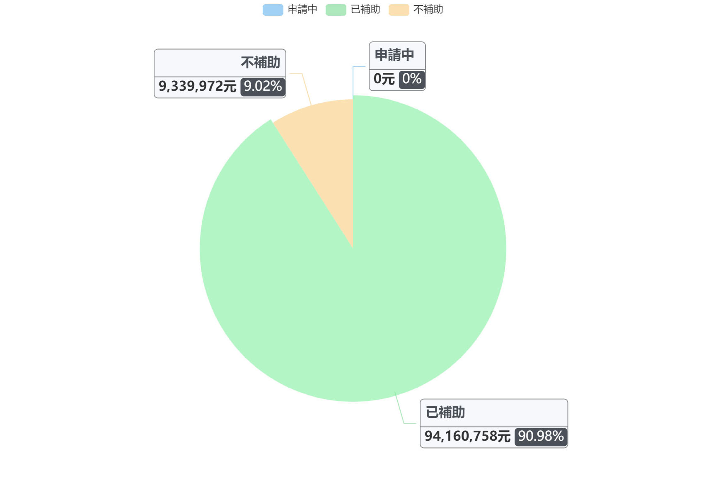

預覽列印
1.若重新查詢單一縣市，會清空單一縣市已加入的圖表；重新操作多縣市查詢，也會清空多縣市查詢已加入的圖表。
2.若移除圖表，需重新查詢加入該圖表!
總申請金額比例圖

查詢條件
加入時間：2022/07/18 - 17:00
縣市：基隆市
年度：109年
補助對象：
- 縣市政府 (含其附屬機關及鄉鎮區公所)
- 團體 (立案團隊、協會、基金會、國立學校、縣立學校、私立學校、企業/公司、社區、非本國籍法人、其他)
- 個人 (自然人、非本國籍自然人)
- 中央機關及其所屬 (國立學校、文化部及附屬機關、中央機關及其所屬)
總申請金額比例圖
查詢條件
加入時間：2022/07/18 - 17:00
縣市：基隆市
年度：109年
補助對象：
- 縣市政府 (含其附屬機關及鄉鎮區公所)
- 團體 (立案團隊、協會、基金會、國立學校、縣立學校、私立學校、企業/公司、社區、非本國籍法人、其他)